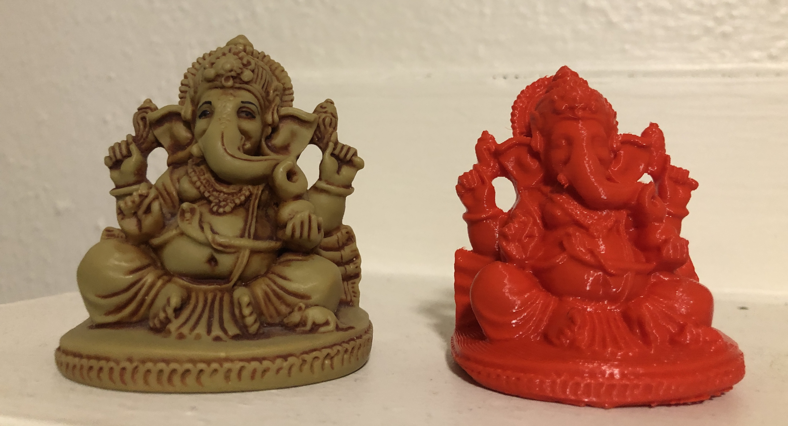
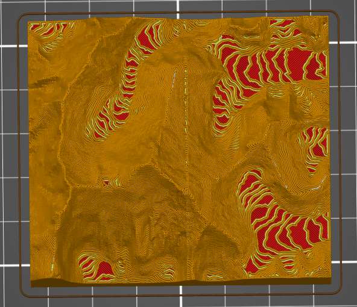

Week 5: 3D Design & Printing
Scanning, PLA, and Prusa: Oh My!
This week's project was to design and print a 3D object that could not easily be made by subtractive methods. I was particularly excited about this task, as I have heard so much about 3D printing through the years and couldn't wait to try my hand at it myself! Getting a grip on the workflow was probably the most important facet of my learning process this week -- I learned a goodly bit about transferring files and transforming file types so each software or machine could do its job!
My first order of business was to design a few 3D shapes in Fusion 360 (the likes of which included "the cylinder" and "the cube"). However, instead of printing these out, I decided to cut my teeth on something a little more intricate (from a printing standpoint). I used the Artec Spider Scanner (valued at $24,800; I'm a lucky gal!) to scan a statuette of Ganesh (the Hindu god of beginnings, known worldwide for its iconic elephantine figure); the figurine boasted many nooks and crannies and suspended arms that would not be able to be achieved by subtractive manufacturing nor captured by a different scanner, so I thought it the perfect candidate. Indeed, the scanner returned an exceptionally intricate design that preserved almost every detail on the statue, which was thoroughly impressive. This job took around 3 hours to print, and I scaled it down slightly to abbreviate the estimated time.
After scanning the Ganesh statuette and figuring out the transfer process from polygon mesh to the slicer's g-code to the Prusa printer by way of SD card, I looked forward to doing some work in Fusion 360 to design an object to print. After some brainstorming, I thought it might be fun to explore topology and elevation in the natural world and model it in three dimensions. I found this amazing website called Terrain2STL, into which you put your coordinates of choice and select the size of the area of interest. Users can even manually lower sea level to emphasize and enhance height differentials. I tried a series of locales, but I found that the Himalayas worked particulary well, for pretty obvious reasons in that I could not zoom in all that far with Terrain2STL.
In my project, I especially wanted to leverage the envelop output (analog voltage measurements) and assign different LED bulbs to different decibel levels' corresponding voltages. With the kindly assistance of the folks at the SparkFun online community, I found template code that was set up to spit out voltage counts in the Serial Monitor in the Arduino IDE. I adapted this to make a selection of conditional if/else statements that would sequentially illuminate three LED bulbs in the presence of differing voltages. See my example below -- this is only a small portion of the loop just to give a sense of how I structured the statements. The full code is available for download here!
Initially, I had quite a few difficulties! My port wasn't being recognized (nothing that a good ole refresh couldn't handle) and the code, while compiling, wasn't running as planned (as it turns out, the difference between "=" and "==" is critically important when starting a loop!). After some requiste web-searching and breadboard tinkering, the vision at last came to fruition -- the bulbs turned on with aural stimuli of different volumes! Enjoy the video below.

Once the code was compiled and did what I wanted it to do, I did some fine-tuning to make proper adjustments to the bulbs' sensitivity to voltage. Initially, the red LED would fire at a very low threshold, consigning it to always being on in the bustling environment of the Fab Lab. So, I changed its voltage range and those of the other LEDs accordingly until they were at appropriate levels.
Finally, as much fun as I had simply snapping or clapping into the microphone, I thought a very fun presentation mechanism that paid homage to my lovely Bluetooth Jukebox was by allowing the bulbs to respond to music. So, I picked a brief song from my favorite band Vulfpeck and set my circuit off to do its thing. Fortunately, the punchiness of Vulfpeck's funky basslines made for exciting rhythmic pulsations by the LEDs, lighting up and turning off in concert.